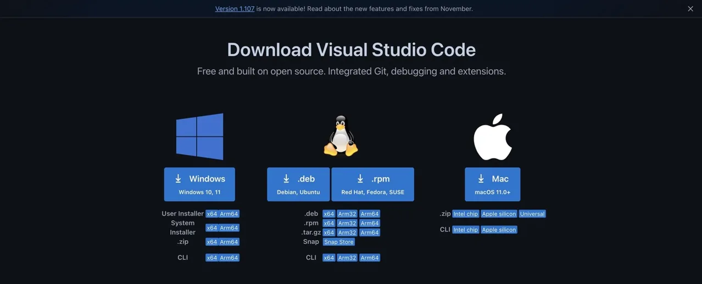

Start with an empty folder and end with a deployed website. A step-by-step guide using Claude Code.
Who's writing this?
I'm a software engineer with over 8 years of experience, mostly in startups, planning and building projects from scratch. That kind of environment has always pushed me to deliver value fast and get involved in areas beyond my comfort zone.
I'll be honest, I was skeptical about AI at first. But using it as an assistant has genuinely pushed the boundaries of what I can accomplish and how quickly I can do it.
It took me some scattered searching to set everything up properly, so here's the beginner's guide I wish I had. I'll show you how to integrate Claude Code into VS Code and start using AI as your coding assistant.
I use Claude Opus 4.5, which has been amazing, best model in my experience. And it's almost as popular as OpenAI's Codex extension on VS Code. Claude Code has over 2,200,000 downloads and ChatGPT has over 2,500,000 downloads.
Let's get into it.
Index
- Let's start with an idea
- Install VS Code
- Install the Claude Code extension
- Connect your Claude account
- Create your project folder
- Set up your CLAUDE.md
- Describe your project in detail
- Wait and enjoy the results
- Deploy your website to Cloudflare Pages
- Final thoughts
- Extras
Some assumptions
Before we start, I'm assuming:
- You have or are able to open a Cloudflare account
- You have or are able to access a Claude account
- You know how to create a folder
- Other basic stuff...
If you don't have these yet, no worries, both are easy to set up and have free tiers.
Let's start with an idea
Every project needs a purpose. Here's our use case: a website for a family law firm that wants to generate leads through an alimony calculator.
How it works: inputs for "Years Married," "Income Spouse A," and "Income Spouse B." It outputs an estimated monthly alimony or child support payment based on state guidelines.
Simple, useful, and a great excuse to see Claude Code in action.
Step 1: Install VS Code
First we need VS Code, probably the most popular IDE (Integrated Development Environment) out there. Sounds intimidating, let's just call it a powerful text editor hehe.
Download it here: https://code.visualstudio.com/download
Follow the installation instructions for your operating system.

Step 2: Install the Claude Code extension
Open VS Code, go to the Extensions tab (the icon with four squares on the left sidebar), and search for "Claude Code for VS Code".
Click install.
Step 3: Connect your Claude account
You can start asking Claude to code without an account but the limits are tiny and you won't have access to Opus 4.5, the rockstar model.
Connect your Claude account within the VS Code extension. Once you're set up, say hi and test it out.
Step 4: Create your project folder
Create a folder where your project will live. Let's call ours "divorce-and-conquer", the name of our fictional law firm.
Open that folder in VS Code (File, then Open Folder).
Step 5: Set up your CLAUDE.md (or AGENTS.md)
Here's where things get interesting.
You can create either a CLAUDE.md or an AGENTS.md file. They actually serve the same purpose. CLAUDE.md is automatically recognized and read by Claude Code to understand your codebase, coding conventions, workflows, and preferences. AGENTS.md is an open standard that works across multiple AI coding tools like Cursor and Copilot.
For this guide we'll use CLAUDE.md since it's native to Claude Code.
There are tons of examples at agents.md/#examples you can learn from. And here Anthropic (Claude's makers) explain how to properly use CLAUDE.md: Anthropic's best practices.
Step 6: Describe your project in detail
This is a simple project so your CLAUDE.md doesn't need to be complicated. But here's the key: be specific.
Describe in as much detail as possible how you want the website. Think about fonts, colors, mood, styles, what pages and what sections you want, what you want to transmit to the user, everything. The more specific you are the better.
Pro tip: use AI to help you structure your thoughts. Describe everything you want, then run it through your AI of choice and tell them to help you organize it into a well-designed CLAUDE.md file.
This was my prompt to create a CLAUDE.md:
Can you help me create a CLAUDE.md to create a professional looking website for a law firm called 'Divorce and Conquer', I want to use pure JS, HTML, CSS, make it load fast, be responsive for all devices.
The pages I want are homepage, about us, an alimony calculator page and a contact page.
In the homepage I want to have an attractive hero, then a 'services' section, then a bit about us, then some other content to maybe rank in Google, then a CTA to the calculator, then why choose us, then a gallery, then some reviews and the footer.
In the about us I want to showcase the experience of the firm, locations, and some other texts that might be useful to people.
In the contact page I want an attractive and easy to use form, with name, email, phone and message, add validations to form.
In the calculator page I want an alimony calculator. How it works: Inputs for "Years Married," "Income Spouse A," and "Income Spouse B." It outputs an estimated monthly alimony or child support payment based on state guidelines. Make sure to ask for an email please, add validations to form.
The colors for the website are Sage Green & Cream, fonts are Headlines (Serif): Use fonts that feel classic but not "old." Body Text (Sans-Serif): High readability is crucial for stressed clients reading long contracts. Identity for the law firm is the following: The "Protector" (Litigation Focused) for firms that handle difficult divorces and custody fights. Primary: Deep Teal (#006D77), Secondary: Charcoal (#2C3E50), Accent: Soft White (#EDF6F9), Font: Merriweather (Bold/Strong) + Open Sans. Message: "We are your shield."
Feel free to add JS or CSS libraries as needed to have a modern family law website.
And this is the resulting CLAUDE.md (it's long):
# Divorce and Conquer - Law Firm Website
## Project Overview
A professional, fast-loading, responsive website for **"Divorce and Conquer"** - a litigation-focused family law firm. The site should convey trust, strength, and protection while remaining accessible to stressed clients going through difficult times.
**Tagline:** "We are your shield."
---
## Tech Stack
- **HTML5** - Semantic markup for SEO and accessibility
- **CSS3** - Custom properties, Flexbox, Grid, animations
- **Vanilla JavaScript** - No frameworks, pure JS for speed
- **Libraries allowed:**
- AOS (Animate on Scroll) - for subtle scroll animations
- Google Fonts - for typography
- Font Awesome or Lucide Icons - for iconography
---
## Brand Identity: "The Protector"
### Color Palette
```css
:root {
--primary: #006D77; /* Deep Teal - trust, stability */
--primary-dark: #004E56; /* Darker teal for hover states */
--primary-light: #008891; /* Lighter teal for accents */
--secondary: #2C3E50; /* Charcoal - professionalism */
--accent: #EDF6F9; /* Soft White - clean, calm */
--cream: #FAFAF5; /* Cream background alternative */
--sage: #83C5BE; /* Sage Green - secondary accent */
--text-dark: #1a1a1a; /* Near black for body text */
--text-muted: #5a6c7d; /* Muted text for captions */
--success: #2ecc71; /* Form validation success */
--error: #e74c3c; /* Form validation error */
--white: #ffffff;
}
```
### Typography
```css
/* Headlines - Merriweather (Serif) */
/* Classic, trustworthy, not outdated */
font-family: 'Merriweather', Georgia, serif;
font-weight: 700; /* Bold for impact */
font-weight: 900; /* Black for hero headlines */
/* Body Text - Open Sans (Sans-Serif) */
/* High readability for stressed clients */
font-family: 'Open Sans', -apple-system, BlinkMacSystemFont, sans-serif;
font-weight: 400; /* Regular for body */
font-weight: 600; /* Semi-bold for emphasis */
```
### Font Sizing (Mobile-First)
```css
/* Base: 16px */
--text-xs: 0.75rem; /* 12px */
--text-sm: 0.875rem; /* 14px */
--text-base: 1rem; /* 16px */
--text-lg: 1.125rem; /* 18px */
--text-xl: 1.25rem; /* 20px */
--text-2xl: 1.5rem; /* 24px */
--text-3xl: 1.875rem; /* 30px */
--text-4xl: 2.25rem; /* 36px */
--text-5xl: 3rem; /* 48px */
--text-6xl: 3.75rem; /* 60px - Hero only */
```
---
## Project Structure
```
divorce-and-conquer/
├── index.html # Homepage
├── about.html # About Us page
├── calculator.html # Alimony Calculator page
├── contact.html # Contact page
├── css/
│ ├── styles.css # Main stylesheet
│ ├── variables.css # CSS custom properties
│ ├── components.css # Reusable components
│ └── utilities.css # Utility classes
├── js/
│ ├── main.js # Main JavaScript (nav, animations)
│ ├── calculator.js # Calculator logic
│ ├── validation.js # Form validation utilities
│ └── contact.js # Contact form handler
├── images/
│ ├── hero/ # Hero background images
│ ├── team/ # Attorney photos
│ ├── office/ # Office/location photos
│ ├── icons/ # Custom icons if needed
│ └── gallery/ # Gallery images
├── fonts/ # Local font files (optional fallback)
└── favicon.ico
```
---
## Page Specifications
### 1. Homepage (index.html)
#### Section Order:
1. **Navigation** (sticky)
2. **Hero Section**
3. **Services Section**
4. **About Us Preview**
5. **SEO Content Block** (Educational content for Google ranking)
6. **Calculator CTA**
7. **Why Choose Us**
8. **Gallery**
9. **Testimonials/Reviews**
10. **Footer**
#### Hero Section Requirements:
- Full viewport height (100vh) or at minimum 80vh
- Background: Dark overlay on professional image OR solid gradient
- Large headline with Merriweather Bold/Black
- Subheadline emphasizing protection/strength
- Two CTA buttons: "Free Consultation" (primary) + "Learn More" (secondary/outline)
- Optional: Subtle animation (fade in text, shield icon pulse)
- Trust indicators below CTAs (years experience, cases won, etc.)
```html
<!-- Hero Content Example -->
<h1>Protecting Your Future Through Every Legal Battle</h1>
<p>When divorce becomes a fight, you need attorneys who won't back down.</p>
```
#### Services Section:
- Grid of 4-6 service cards
- Services to include:
- Divorce & Separation
- Child Custody & Support
- Alimony/Spousal Support
- Asset Division
- Mediation Services
- Domestic Violence Protection
- Each card: Icon + Title + Brief description + "Learn More" link
- Hover effect: subtle lift/shadow
#### About Us Preview:
- Two-column layout (image + text) on desktop
- Firm photo or lead attorney photo
- Brief compelling text about firm's approach
- Stats: Years in practice, Cases handled, Success rate
- CTA button to full About page
#### SEO Content Block:
- Educational content that ranks for searches like:
- "How does divorce work in [state]"
- "What to expect during divorce proceedings"
- "Divorce process timeline"
- 300-500 words of helpful, keyword-rich content
- Collapsible/accordion format to save space
- Internal links to services
#### Calculator CTA Section:
- Eye-catching banner/card design
- Headline: "Estimate Your Alimony" or "Know Your Numbers"
- Brief description of what the calculator does
- Large button linking to calculator page
- Background: Contrasting color (sage or teal gradient)
#### Why Choose Us Section:
- 4-6 differentiators in icon + text format
- Examples:
- 25+ Years Combined Experience
- Aggressive Litigation When Needed
- Compassionate Client Support
- Transparent Pricing
- Free Initial Consultation
- Available 24/7 for Emergencies
- Alternating layout or grid
#### Gallery Section:
- Responsive image grid (masonry or uniform)
- Images: Office, team, awards, community involvement
- Lightbox functionality on click
- Lazy loading for performance
#### Reviews/Testimonials:
- Carousel/slider OR stacked cards
- 3-5 testimonials minimum
- Include: Quote, Client name (or initials), Case type
- Star ratings if available
- Link to Google Reviews/Avvo
#### Footer:
- Multi-column layout
- Columns:
1. Logo + brief tagline + social links
2. Quick Links (all pages)
3. Services list
4. Contact info (address, phone, email, hours)
- Bottom bar: Copyright, Privacy Policy, Terms, Disclaimer
- Legal disclaimer about attorney advertising
---
### 2. About Us Page (about.html)
#### Sections:
1. Page hero (smaller than homepage)
2. Firm story/history
3. Our approach/philosophy
4. Experience showcase (timeline or stats)
5. Team section (if applicable)
6. Office locations
7. Awards/Recognition
8. CTA to contact
#### Firm Experience Showcase:
- Timeline of firm milestones OR
- Large stat counters:
- Years in Practice
- Cases Handled
- Successful Outcomes
- Client Satisfaction Rate
- Counter animation on scroll into view
#### Locations Section:
- Map integration (Google Maps embed or static image)
- Multiple office addresses if applicable
- Each location card:
- Address
- Phone
- Hours
- "Get Directions" link
#### Useful Content Ideas:
- "Our Commitment to You" - firm values
- "What to Bring to Your First Meeting" - practical checklist
- "Understanding the Divorce Process" - brief overview
- Bar associations and certifications
---
### 3. Calculator Page (calculator.html)
#### Alimony Calculator Requirements:
**Form Inputs:**
1. **Email Address** (required, validated)
- Explanation: "We'll send your results and helpful resources"
2. **State/Jurisdiction** (dropdown)
- Different states have different guidelines
3. **Years Married** (number input, 0-50 range)
4. **Your Annual Income** (Spouse A) - currency formatted
5. **Spouse's Annual Income** (Spouse B) - currency formatted
6. **Number of Children** (optional, for context)
**Validation Rules:**
- Email: Valid email format required
- Years Married: Required, must be positive number
- Incomes: Required, must be positive numbers
- Real-time validation feedback
- Disabled submit until valid
**Calculator Logic:**
```javascript
// Simplified alimony estimation (general guideline)
// Note: Add disclaimer that this is estimate only
function calculateAlimony(yearsMarried, incomeA, incomeB) {
const higherIncome = Math.max(incomeA, incomeB);
const lowerIncome = Math.min(incomeA, incomeB);
const incomeDifference = higherIncome - lowerIncome;
// Base calculation: ~30% of income difference
let monthlyAlimony = (incomeDifference * 0.30) / 12;
// Duration factor based on years married
let durationYears;
if (yearsMarried < 5) {
durationYears = yearsMarried * 0.5;
monthlyAlimony *= 0.8; // Shorter marriages = lower amount
} else if (yearsMarried < 10) {
durationYears = yearsMarried * 0.6;
} else if (yearsMarried < 20) {
durationYears = yearsMarried * 0.7;
} else {
durationYears = yearsMarried; // Long-term marriage
}
return {
monthlyAmount: Math.round(monthlyAlimony),
estimatedDuration: Math.round(durationYears),
payingSpouse: incomeA > incomeB ? 'A' : 'B'
};
}
```
**Results Display:**
- Animated number reveal
- Monthly amount prominently displayed
- Estimated duration
- Which spouse would likely pay
- Clear disclaimer about estimates
- CTA: "Schedule a Consultation for Accurate Assessment"
- Option to email results
**Important Disclaimers:**
- "This calculator provides estimates only"
- "Actual alimony depends on many factors"
- "Consult with an attorney for accurate information"
- "Results do not constitute legal advice"
#### Page Layout:
- Two-column on desktop: Form left, Info/FAQs right
- Single column on mobile: Form on top
- Progress indicator if multi-step
- Educational content about alimony factors
---
### 4. Contact Page (contact.html)
#### Contact Form Requirements:
**Form Fields:**
1. **Full Name** (required)
- Validation: Min 2 characters
2. **Email Address** (required)
- Validation: Valid email format
3. **Phone Number** (required)
- Validation: Valid phone format, auto-format as user types
4. **Preferred Contact Method** (radio: Email/Phone)
5. **Case Type** (dropdown - optional but helpful)
- Divorce
- Child Custody
- Alimony/Support
- Asset Division
- Other
6. **Message** (required)
- Validation: Min 20 characters
- Placeholder: "Tell us briefly about your situation..."
7. **Best Time to Call** (optional)
**Form Features:**
- Real-time validation with helpful error messages
- Success/error state styling
- Loading state on submit
- Success message with confirmation
- Honeypot field for spam prevention
**Form UX:**
- Large, touch-friendly inputs
- Clear labels (not just placeholders)
- Floating labels or top-aligned labels
- Progress through form feels smooth
- Auto-focus on first field
#### Page Layout:
- Two-column on desktop:
- Left: Contact form
- Right: Contact info, map, office hours
- Office photo background or accent
- Emergency contact callout: "Urgent matter? Call us now"
#### Contact Information Display:
- Large, clickable phone number
- Email address (linked)
- Physical address with map
- Office hours
- Social media links
---
## Component Specifications
### Navigation
```html
<!-- Desktop: Horizontal menu -->
<!-- Mobile: Hamburger menu with slide-out drawer -->
<nav class="navbar">
<div class="nav-brand">
<img src="logo.svg" alt="Divorce and Conquer">
</div>
<ul class="nav-menu">
<li><a href="index.html">Home</a></li>
<li><a href="about.html">About Us</a></li>
<li><a href="calculator.html">Alimony Calculator</a></li>
<li><a href="contact.html">Contact</a></li>
</ul>
<a href="contact.html" class="nav-cta btn btn-primary">Free Consultation</a>
<button class="nav-toggle" aria-label="Toggle menu">
<span></span>
<span></span>
<span></span>
</button>
</nav>
```
**Navigation Behavior:**
- Sticky on scroll (appears after scrolling past hero)
- Background becomes solid on scroll
- Mobile menu: Full-screen overlay or slide-in drawer
- Active page highlighted
- Smooth scroll for anchor links
### Buttons
```css
/* Primary Button */
.btn-primary {
background: var(--primary);
color: var(--white);
padding: 0.875rem 2rem;
border-radius: 4px;
font-weight: 600;
transition: all 0.3s ease;
}
.btn-primary:hover {
background: var(--primary-dark);
transform: translateY(-2px);
box-shadow: 0 4px 12px rgba(0, 109, 119, 0.3);
}
/* Secondary/Outline Button */
.btn-secondary {
background: transparent;
color: var(--primary);
border: 2px solid var(--primary);
padding: 0.75rem 1.875rem;
}
.btn-secondary:hover {
background: var(--primary);
color: var(--white);
}
```
### Cards
```css
.card {
background: var(--white);
border-radius: 8px;
padding: 2rem;
box-shadow: 0 2px 8px rgba(0, 0, 0, 0.08);
transition: transform 0.3s ease, box-shadow 0.3s ease;
}
.card:hover {
transform: translateY(-4px);
box-shadow: 0 8px 24px rgba(0, 0, 0, 0.12);
}
```
### Form Inputs
```css
.form-group {
margin-bottom: 1.5rem;
}
.form-label {
display: block;
margin-bottom: 0.5rem;
font-weight: 600;
color: var(--secondary);
}
.form-input {
width: 100%;
padding: 0.875rem 1rem;
border: 2px solid #e0e0e0;
border-radius: 4px;
font-size: 1rem;
transition: border-color 0.3s ease, box-shadow 0.3s ease;
}
.form-input:focus {
outline: none;
border-color: var(--primary);
box-shadow: 0 0 0 3px rgba(0, 109, 119, 0.1);
}
.form-input.error {
border-color: var(--error);
}
.form-input.success {
border-color: var(--success);
}
.error-message {
color: var(--error);
font-size: var(--text-sm);
margin-top: 0.25rem;
}
```
---
## Responsive Breakpoints
```css
/* Mobile First Approach */
/* Small devices (phones, 576px and up) */
@media (min-width: 576px) { }
/* Medium devices (tablets, 768px and up) */
@media (min-width: 768px) { }
/* Large devices (desktops, 992px and up) */
@media (min-width: 992px) { }
/* Extra large devices (large desktops, 1200px and up) */
@media (min-width: 1200px) { }
/* Container max-widths */
.container {
width: 100%;
max-width: 1200px;
margin: 0 auto;
padding: 0 1rem;
}
@media (min-width: 768px) {
.container { padding: 0 2rem; }
}
```
---
## Performance Requirements
### Loading Speed Targets:
- First Contentful Paint: < 1.5s
- Largest Contentful Paint: < 2.5s
- Time to Interactive: < 3.5s
- Cumulative Layout Shift: < 0.1
### Optimization Techniques:
1. **Images:**
- Use WebP format with JPG fallback
- Lazy loading for below-fold images
- Responsive images with srcset
- Compress all images (TinyPNG/Squoosh)
2. **CSS:**
- Critical CSS inlined in `<head>`
- Non-critical CSS loaded async
- Minimize unused CSS
- Use CSS containment where appropriate
3. **JavaScript:**
- Defer non-critical scripts
- Minimize DOM manipulation
- Use event delegation
- Debounce scroll/resize handlers
4. **Fonts:**
- Use `font-display: swap`
- Preload critical fonts
- Subset fonts if possible
5. **General:**
- Enable gzip/brotli compression
- Use browser caching headers
- Minimize HTTP requests
- Consider CDN for assets
```html
<!-- Font Loading Example -->
<link rel="preconnect" href="https://fonts.googleapis.com">
<link rel="preconnect" href="https://fonts.gstatic.com" crossorigin>
<link href="https://fonts.googleapis.com/css2?family=Merriweather:wght@700;900&family=Open+Sans:wght@400;600&display=swap" rel="stylesheet">
```
---
## Accessibility Requirements
- Semantic HTML throughout
- ARIA labels where needed
- Keyboard navigation support
- Focus visible states
- Color contrast ratio: 4.5:1 minimum
- Alt text for all images
- Form labels associated with inputs
- Error messages announced to screen readers
- Skip to main content link
- Reduced motion support
```css
@media (prefers-reduced-motion: reduce) {
*, *::before, *::after {
animation-duration: 0.01ms !important;
animation-iteration-count: 1 !important;
transition-duration: 0.01ms !important;
}
}
```
---
## SEO Requirements
### Meta Tags (each page):
```html
<title>Divorce Attorney [City] | Divorce and Conquer Law Firm</title>
<meta name="description" content="Experienced divorce attorneys fighting for your rights. Free consultation. Child custody, alimony, asset division. We are your shield.">
<meta name="keywords" content="divorce attorney, family law, child custody, alimony calculator, [city] divorce lawyer">
<link rel="canonical" href="https://divorceandconquer.com/page">
<!-- Open Graph -->
<meta property="og:title" content="Divorce and Conquer | Family Law Attorneys">
<meta property="og:description" content="...">
<meta property="og:image" content="og-image.jpg">
<meta property="og:url" content="https://divorceandconquer.com">
<!-- Twitter Card -->
<meta name="twitter:card" content="summary_large_image">
```
### Schema Markup:
- LocalBusiness schema
- Attorney schema
- FAQPage schema (for FAQ sections)
- BreadcrumbList schema
### Content Strategy:
- H1 on every page (only one)
- Logical heading hierarchy
- Internal linking between pages
- Alt text with keywords (natural)
- FAQ sections for long-tail keywords
---
## Legal Disclaimers
Include on all pages (footer):
```
"The information on this website is for general information purposes only. Nothing on this site should be taken as legal advice for any individual case or situation. This information is not intended to create, and receipt or viewing does not constitute, an attorney-client relationship."
```
Calculator specific:
```
"This calculator provides estimates only based on general guidelines. Actual alimony amounts depend on numerous factors including state laws, judge discretion, and specific circumstances of your case. Results do not constitute legal advice. Please consult with a qualified attorney for accurate information regarding your situation."
```
---
## Testing Checklist
### Cross-Browser Testing:
- [ ] Chrome (latest)
- [ ] Firefox (latest)
- [ ] Safari (latest)
- [ ] Edge (latest)
- [ ] iOS Safari
- [ ] Android Chrome
### Device Testing:
- [ ] iPhone SE (small)
- [ ] iPhone 14 Pro
- [ ] iPad
- [ ] Android phone
- [ ] Desktop 1920px
- [ ] Desktop 1440px
- [ ] Desktop 1024px
### Functionality Testing:
- [ ] All navigation links work
- [ ] Mobile menu opens/closes
- [ ] Forms validate correctly
- [ ] Calculator produces results
- [ ] Images lazy load
- [ ] Animations perform smoothly
- [ ] No console errors
### Accessibility Testing:
- [ ] Lighthouse accessibility score > 90
- [ ] Keyboard navigation works
- [ ] Screen reader compatible
- [ ] Color contrast passes
### Performance Testing:
- [ ] Lighthouse performance score > 90
- [ ] PageSpeed Insights check
- [ ] No layout shift
---
## Sample Content
### Hero Headlines:
- "Protecting Your Future Through Every Legal Battle"
- "When Your Family's Future Is at Stake, We Fight for You"
- "Your Shield in Life's Most Difficult Moments"
- "Divorce Doesn't Have to Mean Defeat"
### Services Descriptions:
**Divorce & Separation:**
"Whether contested or uncontested, we guide you through every step of the divorce process, protecting your interests and ensuring fair outcomes."
**Child Custody:**
"Your children's wellbeing is paramount. We fight for custody arrangements that serve their best interests while protecting your parental rights."
**Alimony & Support:**
"Ensure fair financial arrangements with our experienced team. We'll help you understand your rights and secure appropriate support."
### Trust Indicators:
- "25+ Years Combined Experience"
- "500+ Families Helped"
- "98% Client Satisfaction"
- "Free Initial Consultation"
- "Available 24/7 for Emergencies"
### Testimonial Examples:
> "During the most difficult time of my life, Divorce and Conquer was my rock. They fought for me when I couldn't fight for myself." — Sarah M., Child Custody Case
> "Professional, compassionate, and fierce when needed. They protected my assets and my future." — Michael T., High-Asset Divorce
---
## Icon Recommendations
Use Lucide Icons (lightweight, consistent):
- Shield (brand icon)
- Users (family/clients)
- Scale (justice)
- Home (property/assets)
- Heart (compassion)
- Phone (contact)
- Mail (email)
- MapPin (location)
- Clock (hours/availability)
- CheckCircle (success/features)
- AlertCircle (validation errors)
- ChevronDown (dropdowns/accordions)
- Menu (mobile nav)
- X (close)
```html
<!-- CDN Link -->
<script src="https://unpkg.com/lucide@latest"></script>
<script>lucide.createIcons();</script>
<!-- Usage -->
<i data-lucide="shield"></i>
```
---
## Final Notes
1. **Tone throughout site:** Professional but warm. Clients are stressed and vulnerable—acknowledge their situation while projecting strength and competence.
2. **Call-to-actions:** Every page should have clear path to contact/consultation. Make it easy to take the next step.
3. **Mobile-first:** Most clients will find you on mobile during difficult moments. Ensure excellent mobile experience.
4. **Speed:** Stressed clients have low patience. Fast loading is essential.
5. **Trust:** Law is about trust. Every element should reinforce credibility—professional photos, real testimonials, credentials displayed.
Once it's ready, tell Claude inside VS Code to follow the instructions in your configuration file.
Step 7: Wait and enjoy the results
Now after Claude does its thing. Here are the actual the results from the CLAUDE.md instructions file we created.
Step 8: Deploy your website to Cloudflare Pages
You have a website but it's only on your computer. Let's put it online.
Open a Cloudflare account at cloudflare.com if you don't have one already. Then go to Pages in the dashboard and upload the files in the folder you just created. Here is a video on how to do that, you will just need to drag and drop or select the folder where we started working.
That's it. You have a live website. Much cheaper and you have more control and privacy than with Lovable. A popular vibe coding platform.
Final thoughts
To be honest, I've never worked on a project where AI did all the work. There are always style changes needed, security that wasn't taken into account, in general tweaking is always needed to achieve the results you want. This is surely harder for people without any experience as developers or software engineers.
I've bumped into people that have become really angry cause I use AI and some others really support using it. There's a lot of divide in yet another area of life.
This guide uses Claude but the same basics apply to any AI assistant extension in VS Code. Some people prefer CLI tools better, there's GitHub Copilot, Cursor, Codeium, and many others. There's a whole universe out there. This was just a tiny example and a small part of what you can do.
Be careful and be responsible. Some projects handle valuable information and AI doesn't always get security right on the first pass.
Hope this was useful and glad to hear what all of you have to say.
Extras
Maybe the page wasn't as fast as it could have been. If you want to squeeze out more performance, check out my Critical CSS Generator which includes a guide to extract the critical CSS of a website and make it load faster.